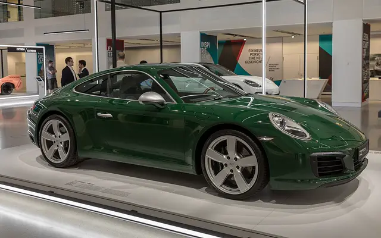

Par Motor › Precios por modelo › Porsche 911
Precio de segunda mano · noviembre de 2026¿Cuánto vale un Porsche 911 de segunda mano?

Precio justo estimado de un Porsche 911 usado en España, año por año, con los kilómetros normales para su edad y en buen estado: de 67.800 € a 164.800 €. Para tasar el tuyo con sus kilómetros reales y su estado, usa el tasador gratis.
Precios del Porsche 911 por año
911 997 (2004–2012)
Precio de nuevo: Carrera 3.6 325 CV, 95.000 € · Carrera 3.6 345 CV, 98.000 € · Carrera S 3.8 355 CV, 108.000 €
| Año | Km normales | Carrera 3.6 325 CV · Gasolina | Carrera 3.6 345 CV · Gasolina | Carrera S 3.8 355 CV · Gasolina |
|---|---|---|---|---|
| 2012 | 100.000 km | 81.100 € | 83.700 € | 92.200 € |
| 2011 | 100.000 km | 79.300 € | 81.800 € | 90.100 € |
| 2010 | 100.000 km | 77.500 € | 80.000 € | 88.100 € |
| 2009 | 100.000 km | 75.800 € | 78.200 € | 86.200 € |
| 2008 | 100.000 km | 74.100 € | 76.500 € | 84.300 € |
| 2007 | 100.000 km | 72.500 € | 74.800 € | 82.400 € |
| 2006 | 100.000 km | 70.900 € | 73.100 € | 80.600 € |
| 2005 | 100.000 km | 69.300 € | 71.500 € | 78.800 € |
| 2004 | 100.000 km | 67.800 € | 69.900 € | 77.000 € |
911 991 (2011–2019)
Precio de nuevo: Carrera 3.4 350 CV, 100.000 € · Carrera 3.0 370 CV, 105.000 € · Carrera S 3.8 400 CV, 118.000 €
| Año | Km normales | Carrera 3.4 350 CV · Gasolina | Carrera 3.0 370 CV · Gasolina | Carrera S 3.8 400 CV · Gasolina |
|---|---|---|---|---|
| 2019 | 100.000 km | 79.200 € | 83.200 € | 93.500 € |
| 2018 | 100.000 km | 81.300 € | 85.300 € | 95.900 € |
| 2017 | 100.000 km | 83.200 € | 87.400 € | 98.200 € |
| 2016 | 100.000 km | 85.000 € | 89.300 € | 100.300 € |
| 2015 | 100.000 km | 86.700 € | 91.000 € | 102.300 € |
| 2014 | 100.000 km | 88.300 € | 92.700 € | 104.200 € |
| 2013 | 100.000 km | 87.300 € | 91.700 € | 103.000 € |
| 2012 | 100.000 km | 85.400 € | 89.600 € | 100.700 € |
| 2011 | 100.000 km | 83.500 € | 87.600 € | 98.500 € |
911 992 (2019–hoy)
Precio de nuevo: Carrera 3.0 385 CV, 130.000 € · Carrera S 3.0 450 CV, 145.000 € · Carrera 4S 3.0 450 CV, 155.000 €
| Año | Km normales | Carrera 3.0 385 CV · Gasolina | Carrera S 3.0 450 CV · Gasolina | Carrera 4S 3.0 450 CV · Gasolina |
|---|---|---|---|---|
| 2026 | 5.000 km | 138.200 € | 154.200 € | 164.800 € |
| 2025 | 20.000 km | 129.500 € | 144.400 € | 154.400 € |
| 2024 | 35.000 km | 126.600 € | 141.200 € | 150.900 € |
| 2023 | 50.000 km | 123.800 € | 138.100 € | 147.600 € |
| 2022 | 65.000 km | 121.000 € | 135.000 € | 144.300 € |
| 2021 | 80.000 km | 113.600 € | 126.700 € | 135.500 € |
| 2020 | 95.000 km | 104.200 € | 116.200 € | 124.200 € |
| 2019 | 100.000 km | 103.000 € | 114.900 € | 122.800 € |
Kilómetros normales: 15.000 al año en gasolina, híbridos y eléctricos, y 20.000 en diésel, con un máximo de 100.000 km (por encima no tasamos: el precio depende demasiado del historial de cada coche). Cifras redondeadas a 100 €.
Preguntas frecuentes
¿Cuánto vale un Porsche 911 de segunda mano?
Según el año, la versión y los kilómetros, un Porsche 911 usado vale hoy de 67.800 € a 164.800 € en España. El más barato de nuestra tabla es un Carrera 3.6 de 2004 (67.800 €) y el más caro un Carrera 4S 3.0 de 2026 (164.800 €). Son precios justos estimados entre particulares y profesionales, con los kilómetros normales para su edad y en buen estado.
¿Cuánto valor pierde un Porsche 911 al año?
Con unos años encima, un Porsche 911 pierde alrededor de un 2 % de su valor cada año (calculado sobre el Carrera 3.0 de la generación 911 992). Los primeros años la caída es mayor y a partir de los 70.000 km se acelera.
¿Qué motorizaciones tiene el Porsche 911?
En nuestra base de datos hay versiones gasolina, en 3 generaciónes: 911 997, 911 991 y 911 992.
¿Cómo sé si me piden demasiado por un Porsche 911?
Abre el tasador de Par Motor, elige el Porsche 911, el año y los kilómetros reales, y escribe lo que te piden. Te diremos si está por debajo del precio justo (chollo) o por encima (caro). Es gratis y no pide registro ni matrícula.
Historia y curiosidades
Otros Porsche
Compara su coste real
El precio de compra es solo una parte. Mira cuánto te costaría al mes con combustible, seguro, neumáticos, mantenimiento y lo que pierde de valor.
Abrir el comparador →